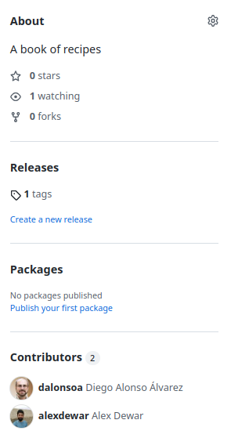
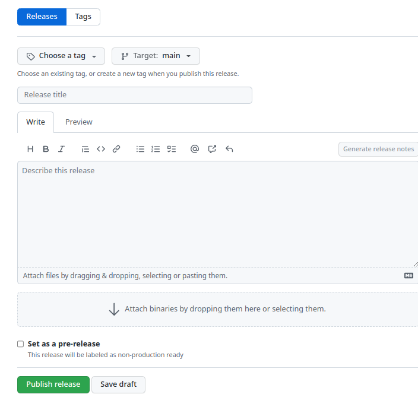
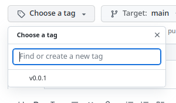
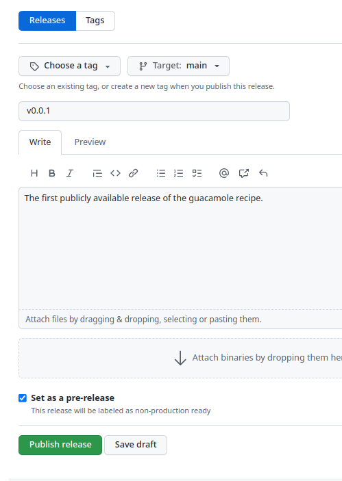
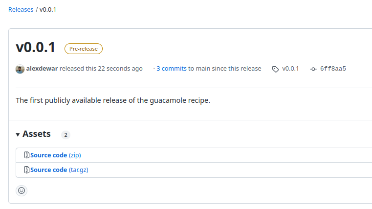

Code versions, releases and tags
Last updated on 2025-10-16 | Edit this page
Overview
Questions
- What is a Git tag and how does it differ from a branch?
- How can I tag commits?
- How and when should I release a new version of my code?
- What is the difference between major and minor version changes?
- How can I effectively communicate what has changed between versions?
- How can I publish a release on Github?
Objectives
- Understand what is meant by a release and a version
- Know how to tag a given commit
- Understand how to give your software meaningful version numbers with semantic versioning
- Know how to push your tags and publish a release of your software
Background: To release or not to release?
All of you will already be familiar with the concept of software
versioning. Often when you download a piece of software from its website
it’ll tell you that it’s v13.4.2 (or whatever) that you’re
downloading.
Releasing software with an explicit version number like this is a common practice and one that you may eventually consider for some of your own projects. We will show you how to do this using Git and GitHub. Even if you never end up making a release yourself, rest assured that sooner or later you will have to work with a repository which uses releases like this, so it’s important to understand the concepts at least.
The first question you might have is:
Why do I need a “version” for my software? Isn’t Git tracking the version anyway?
Sort of. The problem here is that the word “version” can mean several
different things in the context of Git. Ordinarily, when people talk
about a particular version of a piece of software, they mean a version
with a particular release number, such as v13.4.2. However,
in another sense, each commit in your repository represents a different
version of the code and can be represented by a unique commit hash (e.g.
a34042b).
To avoid confusion, people usually refer to the first kind of version as a “release” and the second as a “commit”, which is what we’ll do here.
When should I consider creating releases?
You might consider creating releases if:
- You have a large, distributed user base and you don’t want them just using some random commit from your repository
- You periodically add or change features in a non-backwards-compatible way
- You want to bundle these features together and advertise them to your users
- Your software is complex and you can’t guarantee that every commit
on
mainhas been thoroughly tested - You want to be able to support several versions of your software simultaneously (e.g. you intend to maintain a v2 of your software, even after v3 has been released)
- You want to provide a place to download files that you’ve generated
(such as
.exefiles) and distribute them to users
In general, though, creating a release is also just a convenient way
to label a particular commit, so it’s a useful way to ensure that the
users you’re sharing it with -- who may not be technically savvy – are
using a specific commit, rather than simply whatever the latest commit
on main is.
When don’t I need to create releases for my software?
You probably don’t need to create releases for your software if:
- The code never changes
- You’re the only developer and the only user (e.g. it’s some analysis scripts that only you use)
- (OR there are only a few of you and you all just use the latest commit etc.)
- The software is simple and doesn’t change much from one commit to the next
In this case, if you just need to clarify which commit you’re working from (e.g. to a colleague), you can always obtain the current commit hash like so:
commands, sh git rev-parse --short HEAD
OUTPUT
a34042bLabelling a particular commit with git tag
Git tags provide a way to give human-readable names to specific commits. We will now go through how to add and remove tags to your repository.
Firstly, remind yourself what the history for your
recipe repository looks like with git graph.
Mine looks like this:
git graphOUTPUT
* a34042b (HEAD -> spicy) Chillies added to the mix
* d10e1e9 (main) Guacamole must be served cold
* 5344d8f Revert "Added 1/2 onion to ingredients"
* fe0d257 Merge branch 'experiment'
* 99b2352 Reduced the amount of coriander
* 2c2d0e2 Merge branch 'experiment'
|\
* | 6a2a76f Corrected typo in ingredients.md
| * d9043d2 try with some coriander
|/
* 57d4505 (origin/main) Revert "Added instruction to enjoy"
* 5cb4883 Added 1/2 onion to ingredients
* 43536f3 Added instruction to enjoy
* 745fb8b adding ingredients and instructions(Note that yours may look different depending on whether you followed the steps yourself or downloaded the pre-made repository.)
Let’s say that you have decided that the point at which you added half an onion was a highpoint in the recipe’s history and you want to make a note of which commit that was for a future date by giving it the tag “tasty”. You can do this like so:
git tag tasty [commit hash]In my case, I ran:
git tag tasty 5cb4883You can list the tags for your repo by running git tag
without any arguments:
git tagOUTPUT
tastyTo check which commit hash this corresponds to, use:
git rev-parse --short tastyOUTPUT
5cb4883Double-check that this is the commit you intended to tag by running
git log (or git graph) again.
Note that tasty can now be used like other git
references, such as commit hashes and branch names. For example, you can
run git switch --detach tasty to (temporarily) update the
contents of your repo to be as they were back when you added half an
onion to the instructions. (Note that you need to include the
--detach option!)
You may now be wondering, if this is the case, then how is a tag
different from a branch? Try switching to tasty to see what
happens:
git switch tastyOUTPUT
fatal: a branch is expected, got tag 'tasty'
hint: If you want to detach HEAD at the commit, try again with the --detach option.Git provides some helpful output here. To “detach HEAD”
means to change the current working state to a commit that isn’t on any
branch at all, so if you commit any changes, they won’t be saved to any
branch. Note that your tag will stay pointing to the same commit it was
before. This is the difference between a branch and a tag. The
tip of a branch points to the last committed change to the branch,
whereas a tag always points to a specific commit. Think about it this
way: when you release a piece of software, you want that version – say,
v1.0 – to represent the code in one unique state. You don’t
want two of your users to be using two different versions of the code
both labelled v1.0, for example.
Let’s try again using the --detach option:
git switch --detach tastyOUTPUT
HEAD is now at 5cb4883 Added 1/2 onion to ingredientsNow it works. Fortunately, a detached HEAD is a much
less serious affliction for git repos than human beings, and you can
reattach it by simply checking out a branch:
git switch mainAssume now that you have decided that you no longer want this tag (perhaps on eating, it turned out not to be tasty after all). You can delete the tag like so:
git tag -d tastyOUTPUT
Deleted tag 'tasty' (was 5cb4883)Exercise: Try creating your own tag
Now try it yourself. Choose a different commit and give it a label
using git tag. Confirm that you can check out this commit.
Once you have finished, delete it.
There is one last important thing to know about git tags. Like branches, they are not automatically synced with your remote (e.g. GitHub) and have to be pushed explicitly. We will cover this later, but first let’s discuss how to give your software a descriptive version number.
What’s in a version number?
While your code will no doubt smell as sweet however you number your releases, it is useful for your users if you use a versioning scheme that conveys some information about the kind of thing that is likely to have changed since the last version. Unfortunately, this practice is not universal. Often with software releases, the meaning behind the version number is rather opaque, except for the fact that higher numbers generally mean “newer”. It often isn’t obvious to what extent a new version of a piece of software is compatible with older versions – if at all!
Amidst this confusion, a convention that is becoming increasingly
common is so-called semantic
versioning. A semantic version number is composed of three numbers
separated by dots, e.g. v1.2.3. In order, these numbers are
referred to as the “major version”, “minor version” and “patch version”.
Generally speaking, changes to the numbers are less significant as you
go to the right, i.e. an increase in the major version number indicates
that more has changed than an increase in the minor version number.
However, the semantic versioning specification actually has stricter requirements than this, namely that you should increment:
- The major version when you make incompatible changes
- The minor version when you add functionality in a backwards compatible manner
- The patch version when you make backwards compatible bug fixes
While this degree of precision may not be required for any of your own projects, it is a good convention to stick to nonetheless as other developers will probably assume that this is what you are using.
Let’s add a proper version tag to the recipe repository.
Give the first commit to the repository (in mine this is
745fb8b) the tag v0.0.1, which is often used
as the first tagged release for a project. (Another common convention is
to indicate that the software is still experimental by giving it a major
version number of zero.)
git tag v0.0.1 745fb8bVerify that the tag has been added:
git tagOUTPUT
v0.0.1Now your repository has a proper version tag. Next, let’s push this tag to GitHub so the rest of the world can see it.
Pushing your tags and publishing a release
To push your tags to GitHub, do the following:
git push --tagsYou should see something like this:
OUTPUT
Total 0 (delta 0), reused 0 (delta 0), pack-reused 0
To https://github.com/alexdewar/recipe.git
* [new tag] v0.0.1 -> v0.0.1Now open your browser and go to the GitHub page for your recipe repository (see the link in the command output). Mine is here, for example.
If you look in the right-hand pane, under “Releases”, you should now see “1 tags”:

This refers to the v0.0.1 tag you just pushed. (If there
are two tags, you may have forgotten to delete the tasty
tag, which doesn’t matter much.)
Under “1 tags”, there is a link entitled “Create a new release”. Click it and you should see something like the following:

Click “Choose a tag” then select your tag “v0.0.1” from the dropdown list:

For the release title, you can just put “v0.0.1” again. Then add a
description of your choosing. (You can check the “Set as pre-release”
box if you want to indicate to your users that the recipe isn’t
production ready.) Note that there is another field: “Attach binaries”.
We won’t be using this now, but if you did have a compiled version of
your software (e.g. as an .exe file), this is where you
could upload it.
When you’re finished, click “Publish release”:

Now you should be redirected to a page that looks like this:

Congratulations, you have made your first release! You can share the link to this page with others if you want to notify them of the release. Alternatively, users can find your release from the repo’s main page by clicking on “Releases”.
Exercise: Publish another release
Now try creating another release corresponding to a newer version of
the recipe, following the same steps you did for
v0.0.1.
Your first task will be to choose a sensible version number for the release, using semantic versioning. This is necessarily a bit subjective, but you should be able to justify your decision .
End by pushing the tag to GitHub and issuing another release, with an appropriate description.
- A version of your code with a release number (e.g. v13.4.2) is referred to as a release
- A version of your code represented by a commit hash (e.g. 047e4fe) is just referred to as a commit
- Publishing a release can be a good way to bundle features and ensure your users use a specific version of your code
-
git tagallows you to give a commit a human-readable name, such as a version number - Semantic versioning is a common convention for conveying to your users what a new version number means
- Tags need to be explicitly pushed to remotes with
git push --tags - You can use a tag as the basis for a release on GitHub